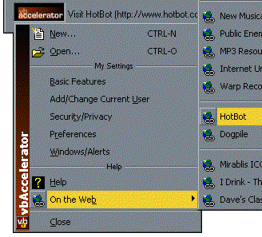

VB5 ICQ Menu Demonstration Project (68K)
VB5 ICQ Menu Demonstration Project (68K)
 VB6 ICQ Menu Demonstration Project (59K)
VB6 ICQ Menu Demonstration Project (59K)
 13 Feb 1999
13 Feb 1999
First Posted

Using the cNewMenu DLL to Create Start Menu/ICQ Style Pop-up Menus
The PopupMenu ActiveX DLL let's you create an unlimited number of cool-looking pop-up menus in your application, but what to do in the unlikely event that even that's not cool enough for you? The new version gives you this control too. The OwnerDraw property, which applies to each menu item allows you to intercept measuring and drawing events for the menu item, and to either add bits or completely take charge of drawing the items.
This sample shows you how to add to the existing menu, in order to create a side bar up the left-hand edge of the menu to give a pop-up menu that Start Menu/ICQ look. Another sample (Owner Draw Pop-up Menus) shows you how to take complete control of drawing the menu items to create a line-style and a highlight-colour picker.
How it Works
When you set the OwnerDraw property to true for a menu item, the cNewMenu ActiveX DLL will raise MeasureItem and DrawItem events to your code. If you don't do anything to respond to these methods except set the bDoDefault parameter to True during the DrawItem event, the menu will draw using the standard style.
On the other hand, you can freely modify the width and height of the item during the MeasureItem method, and during the DrawItem method you can adjust the rectangle in which the item draws. In this sample I want to increase the size of menu items so they accommodate the side bar, and also ensure they draw after the side bar. I use a PictureBox to hold the graphic of the side bar called picSideBar. So in response to MeasureItem:
Private Sub m_cMenu_MeasureItem(_
ByVal lMenuIndex As Long, _
lWidth As Long, _
lHeight As Long _
)
' When a menu item is owner-draw, it will raise this event to request
' its size. lWidth as lHeight will be already filled in with the
' size of the menu item as it would be if the standard drawing method
' was used.
' Here we check if the item being measured is in the main pop-up menu;
' if it is we add the width to accommodate the side bar logo:
If m_cMenu.hMenu(1) = m_cMenu.hMenu(lMenuIndex) Then
' Add the side bar width:
lWidth = lWidth + picSideBar.Width \ Screen.TwipsPerPixelX + 1
End If
End Sub
And in response to DrawItem:
Private Sub m_cMenu_DrawItem( _
ByVal hDC As Long, _
ByVal lMenuIndex As Long, _
lLeft As Long, lTop As Long, _
lRight As Long, lBottom As Long, _
ByVal bSelected As Boolean, ByVal bChecked As Boolean, _
ByVal bDisabled As Boolean, _
bDoDefault As Boolean _
)
Dim lW As Long
' The DrawItem event for Owner Draw menu items either allows you
' to draw the entire item, or just to do some new drawing then
' let the standard method do its stuff. This is useful if you
' want to add a graphic to the left or right of the menu item.
' Here we draw the relevant part of the side bar
' logo to the left of the menu then offset the
' left position so the rest of the menu draws
' after it:
lW = picSideBar.Width \ Screen.TwipsPerPixelX
BitBlt hDC, lLeft, lTop, lW, lBottom - lTop, _
picSideBar.hDC, 0, lTop, vbSrcCopy
lLeft = lLeft + lW + 1
bDoDefault = True
End Sub
Note that all the measurements are in pixels.
Drawing The Sidebar Itself
To draw the side bar you just need a method of creating a vertical font and a gradient. Both of these are covered in more detail in the class supplied with the article "Text at any angle". You'll see that you can customise the font, the text to be drawn, the icon to be drawn and the start and end colours of the gradient using the class. The only extra thing required to make this work is to determine how tall the side bar will be. This is done by asking the DLL for the menu item height using the MenuItemHeight property of the menu items.
' Firstly, evaluate the menu item's height in the main menu:
Dim lHeight As Long, lT As Long
For i = 1 To m_cMenu.Count
' Check if item is in the main menu:
If (m_cMenu.hMenu(i) = m_cMenu.hMenu(1)) Then
' Add the item:
lHeight = lHeight + m_cMenu.MenuItemHeight(i)
lT = lT + 1
End If
Next i
Other Stuff
The sample also implements a very simple PictureClip style animated button control. Have fun with it!